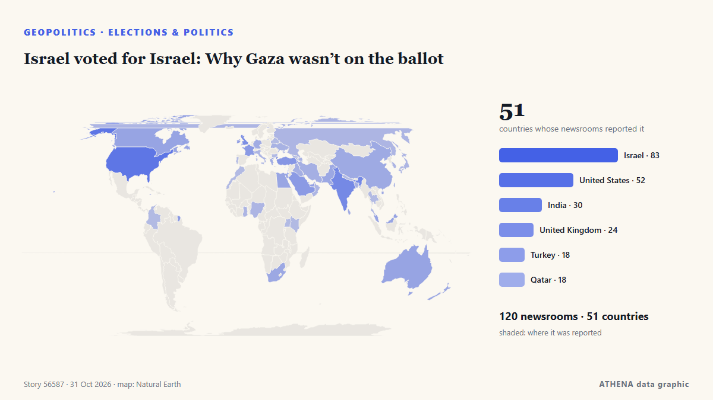

Israel voted for Israel: Why Gaza wasn’t on the ballot

Israelis head to the polls on October 27 in a vote that will cast Prime Minister Benjamin Netanyahu and his right-wing and religious allies against a motley crew of opposition parties. από Responsible Statecraft
Αναφέρθηκε ανεξάρτητα από 120 μέσα σε 51 χώρες από τις 24 Οκτ, πρώτο το Responsible Statecraft· η κάλυψη εξαπλώνεται ακόμη. Το ATHENA εκτιμά τον κίνδυνο αυξημένο (5.2/10), κυρίως λόγω της σοβαρότητάς του και της εμβέλειάς του. Βεβαιότητα 90% (υψηλή): το επιβεβαιώνουν 120 ανεξάρτητα μέσα, μέση αξιοπιστία 74%. Μέσα ανά χώρα: Ισραήλ (14), Ηνωμένες Πολιτείες (6), Ινδία (3). Κάλυψη: 24 Οκτ έως 28 Οκτ, 100 ώρες.
Γιατί έχει σημασία: Η σελίδα παρακολουθεί τη σύγκρουση που αφορά το Ισραήλ, τη Γάζα, τη Δυτική Όχθη και τον Λίβανο — στρατιωτικές εξελίξεις, ανθρωπιστική κατάσταση και διπλωματία — όπως την καλύπτουν μέσα από όλο τον κόσμο.
Τι άλλαξε: 68 νέες αναφορές από 40 μέσα στο 24ωρο έως 31 Οκτ.
Πρώτη διατύπωση: Israel counts votes with Netanyahu’s future on the line
Οι τίτλοι των ειδήσεων παρουσιάζονται στα αγγλικά, όπως δημοσιεύτηκαν.
Με μια ματιά
Επιλέγεται, βαθμολογείται και γράφεται από τη δημοσιευμένη μεθοδολογία του ATHENA. Κανένας συντάκτης δεν παρεμβαίνει σε μεμονωμένα γεγονότα. Πώς παράγεται ›
| 24 Oct 04:05 UTC | 1 |
|---|---|
| 24 Oct 16:05 UTC | 0 |
| 25 Oct 04:05 UTC | 0 |
| 25 Oct 16:05 UTC | 0 |
| 26 Oct 04:05 UTC | 1 |
| 26 Oct 16:05 UTC | 3 |
| 27 Oct 04:05 UTC | 9 |
| 27 Oct 16:05 UTC | 21 |
| 28 Oct 04:05 UTC | 35 |
| 28 Oct 16:05 UTC | 35 |
| 29 Oct 04:05 UTC | 45 |
| 29 Oct 16:05 UTC | 136 |
| 30 Oct 04:05 UTC | 124 |
| 30 Oct 16:05 UTC | 37 |
| 31 Oct 04:05 UTC | 24 |
| 29 Oct 15:43 UTC | 5.1 |
|---|---|
| 29 Oct 22:07 UTC | 4.7 |
| 29 Oct 22:24 UTC | 5.2 |
| 29 Oct 22:32 UTC | 4.7 |
| 29 Oct 22:48 UTC | 5.2 |
| 29 Oct 23:01 UTC | 4.7 |
| 29 Oct 23:18 UTC | 5.2 |
| 29 Oct 23:20 UTC | 4.7 |
| 29 Oct 23:27 UTC | 5.2 |
| 29 Oct 23:45 UTC | 4.7 |
| 29 Oct 23:46 UTC | 5.2 |
| 30 Oct 06:41 UTC | 4.7 |
| 30 Oct 06:44 UTC | 5.2 |
| 30 Oct 06:48 UTC | 4.7 |
| 30 Oct 07:24 UTC | 5.2 |
| 30 Oct 07:53 UTC | 4.7 |
| 30 Oct 08:06 UTC | 5.2 |
| 30 Oct 18:55 UTC | 4.7 |
| 30 Oct 22:11 UTC | 5.5 |
| 31 Oct 15:40 UTC | 5.2 |
Γιατί αυτοί οι αριθμοί
Σημασία
Κίνδυνος
Βεβαιότητα
Η κάλυψη — ποιος το ανέφερε και πότε
ο τίτλος όπως δημοσιεύτηκε · ανοίγει το πρωτότυπο- Responsible Statecraft · Ηνωμένες ΠολιτείεςWhat Israel's razor thin elections mean for Gaza and Iran
- Responsible Statecraft · Ηνωμένες ΠολιτείεςMeet the ex-Biden official working hard to rewrite history on Gaza
- Central Banking · Ηνωμένο ΒασίλειοBank of Israel rebukes Netanyahu over sanction evading crypto plan
- Arab News · Σαουδική ΑραβίαIsrael’s election could reshape its politics, without changing its course on Palestine
- Haaretz (English) · ΙσραήλMy son is back from Gaza. Now it's time to take our country back
- NPR · Ηνωμένες ΠολιτείεςA quick guide to Israel's high-stakes election
- Anadolu Agency (English) · ΤουρκίαIsrael counts votes with Netanyahu’s future on the line
- Türkiye Today · ΤουρκίαIsraelis begin voting as Netanyahu faces toughest election challenge in years
- The Jerusalem Post · ΙσραήλActivists urge voters returning to Israel to save emergency hotline numbers in case of arrest
- Kyiv Post · ΟυκρανίαWhat Israel’s Election Could Change for Ukraine and Relations With Russia
- The Jerusalem Post · ΙσραήλSohlberg bars UTJ turnout reports from polling stations; watchdog urges enforcement
- Haaretz (English) · ΙσραήλThese Palestinians woke up on Election Day still unsure whether to vote or boycott
- The Diplomat · ΙαπωνίαThe Future of India-Israel Ties After Israel’s Election
- Tehran Times · ΙράνIsraeli voters chose between ‘rabid yellow dogs and ravenous jackals’
- Haaretz (English) · ΙσραήλNetanyahu has a sword hanging over his head – and Eisenkot can wield it
- The New Arab · INTBen-Gvir scrambles door-to-door for votes as Arab turnout surges
- Haaretz (English) · ΙσραήλWe found the few Israelis who aren't voting – and are willing to talk about it
- The National · Ηνωμένα Αραβικά Εμιράτα'Call me': Israeli right-wing candidates go door to door pleading for votes
- Haaretz (English) · ΙσραήλNetanyahu films campaign ad at Israeli city hall in violation of election law
- Haaretz (English) · ΙσραήλInside the propaganda machine: How Netanyahu's campaign messages spread
- SABC News · Νότια ΑφρικήIsrael election will not change fate of Palestinian people: Mbeki
- NDTV · ΙνδίαMassive Arab-Israeli Poll Turnout, Netanyahu's "End To Jewish State" Charge
- France 24 English · ΓαλλίαIbrahim Abu Ahmad on Israeli election: 'Crucial for Arab citizens to have ally in Jewish community'
- The New York Times (World) · Ηνωμένες ΠολιτείεςIsraeli Voting Ends After Strong Turnout With No Clear Winner
- The New York Times (World) · Ηνωμένες ΠολιτείεςTwice before, Netanyahu was ousted then returned to power.
- Times of India · ΙνδίαElection Commision keeps RTI applicant waiting for reply
- Arab News · Σαουδική ΑραβίαIsrael commits ‘mediacide’ to conceal its atrocities in Gaza, UN expert says
- Middle East Eye · INTPalestinian voter mobilisation a ‘truly historic development’, analyst says
- France 24 English · ΓαλλίαBibi's moment of truth: Israel votes in first general election since October 7 attacks
- Haaretz (English) · ΙσραήλMuted mood on Tel Aviv's streets as voters react to Israel's election exit polls
- Haaretz (English) · ΙσραήλHow will Netanyahu try to reframe his defeat as a huge victory
- Haaretz (English) · ΙσραήλNetanyahu's scare campaign against Arab voters ended up pushing them to the polls
- Haaretz (English) · ΙσραήλDecoding Israel's election: This is the jargon you need to know
- NPR · Ηνωμένες ΠολιτείεςPartnerships between ICE and local police surge, report finds
- Trinidad Express · Τρινιντάντ και ΤομπάγκοAustin Immigration Lawyer Hosts Livestream To Discuss Immigration News & Updates
- Mehr News (English) · ΙράνVIDEO: Boy bids farewell with sister after shooting by Israel
- The Jerusalem Post · ΙσραήλAfter years of war, division, Israelis vote in record numbers to shape their future - editorial
- The Jerusalem Post · ΙσραήλAnti-Netanyahu bloc vows not to let chance to replace government slip away
- Times of India · Ινδία'Whole tide turned': Trump takes credit for Netanyahu's showing in Israel elections
- The Independent · Ηνωμένο ΒασίλειοTrump takes credit for Netanyahu election performance after endorsing Israeli prime minister